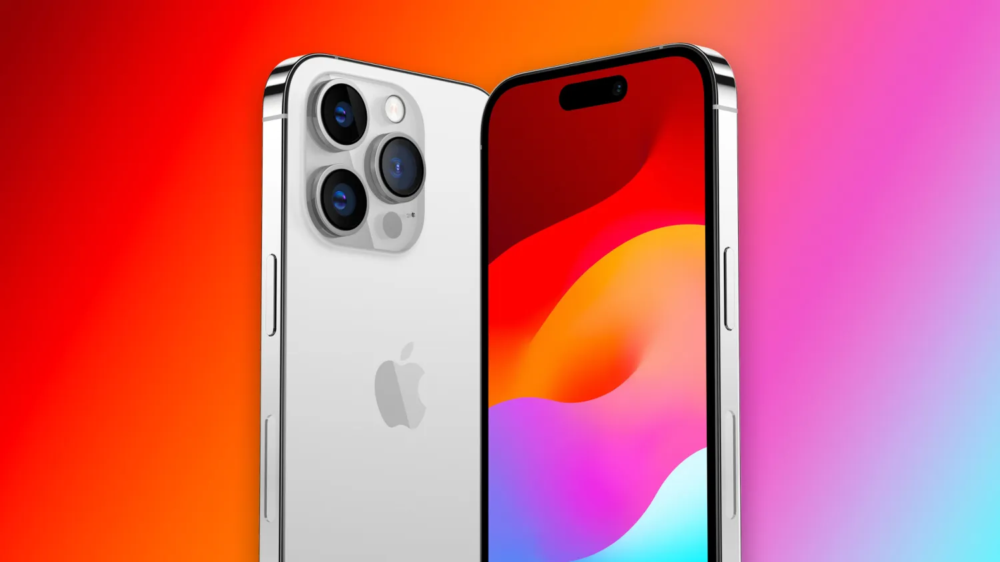

Let's explore why the iPhone stands out among the competition and why it remains the top choice for smartphone enthusiasts worldwide.
Why the Majority Loves iPhone
The iPhone isn't just a phone; it's a lifestyle.
Its sleek design, intuitive user interface, and seamless integration with other Apple devices make it a favorite among users of all ages.
From the simplicity of its operating system to the stunning quality of its cameras,
the iPhone offers an unparalleled user experience that keeps people coming back for more.

iPhone
The iPhone Difference
What sets the iPhone apart from other phone models? It's simple: attention to detail.
Apple's relentless pursuit of perfection shines through in every aspect of the iPhone, from its hardware to its software.
With industry-leading performance, best-in-class security features,
and a vast ecosystem of apps and services, the iPhone delivers an unmatched level of reliability and functionality.
Funny commercial that shows comparison between iPhone and other phone models
The Best-Selling Smartphone in the World
It's no secret that the iPhone is the king of smartphones.
With millions of units sold worldwide, the iPhone has firmly cemented its place as the best-selling smartphone in the world.
Its widespread popularity and loyal fan base speak volumes about its quality, innovation, and enduring appeal.